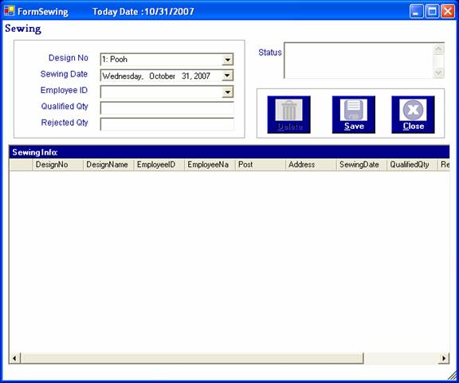
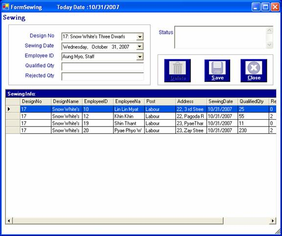
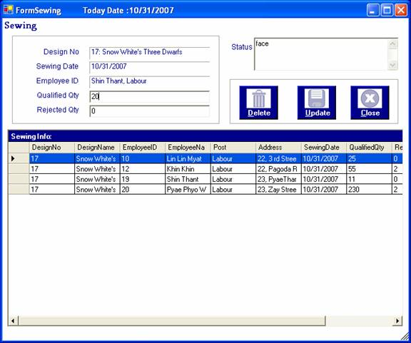
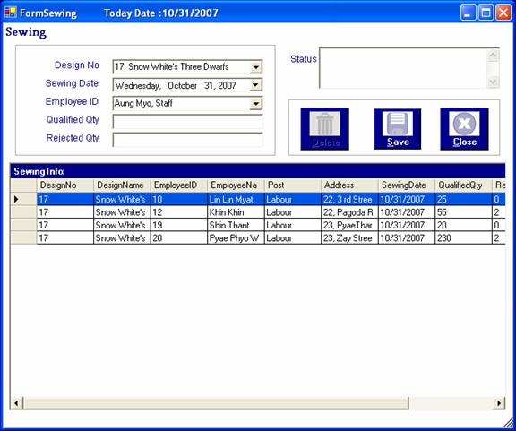
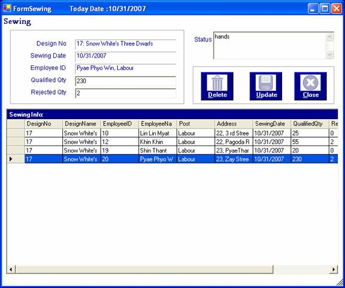
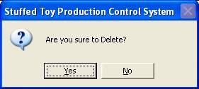

How to process Sewing
After you have successfully logged in to the system, you can enter the required data and after there is a job for sewing, that sewing information will be stored for supervising day by day operation and progress of job accomplishment.
To store the data for sewing, open the sewing form from the Process Menu.

When it is come out, choose design no, sewing date, employee ID who performs this task and enter the qualifed quantities for a day with rejected quantities and any further status information.

Whenever the sewing information is saved, this message will be appeared.
You can add any designs with any employee as you like for a day.
To edit the numbers of pieces sewn for a day, double click a required row on the grid. As soon as the row is double -clicked, that row will be selected and its information will be appeared in the relevant textboxes. Moreover, "Update" button to edit the data.

Then, edit the quantities as you like and click "Update" button or "Alt+U". This message will be appeared.
The edited data can be seen.

To remove data, double click a required row on the grid. As soon as the row is double -clicked, that row will be selected and its information will be appeared in the relevant textboxes. Moreover, "Delete" button will be enabled to click.

Click "Delete" button or "Alt+D" to remove data, this message will be come out.

If click"Yes" button, the selected row will be removed from the grid. If not, there is no action.
If "Yes" button is clicked, this message will be appeared.

Finally, to close the Sewing form, Press "Close" button or "Alt+C".